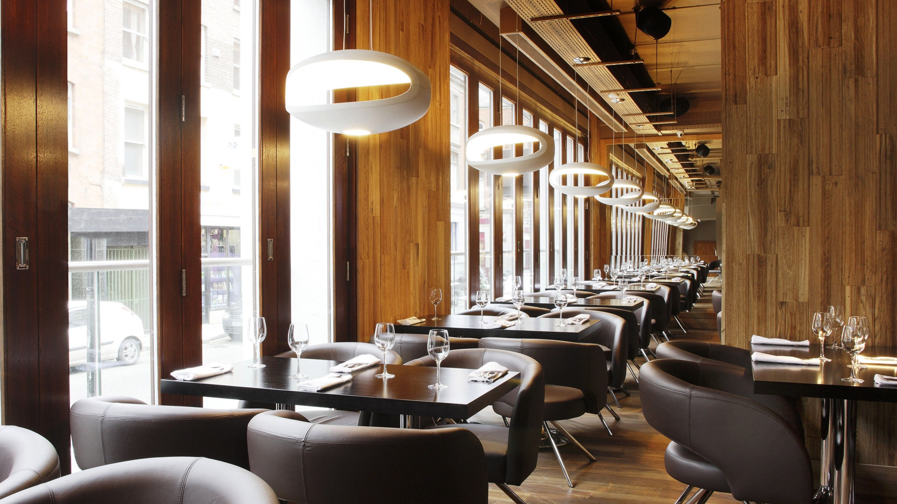
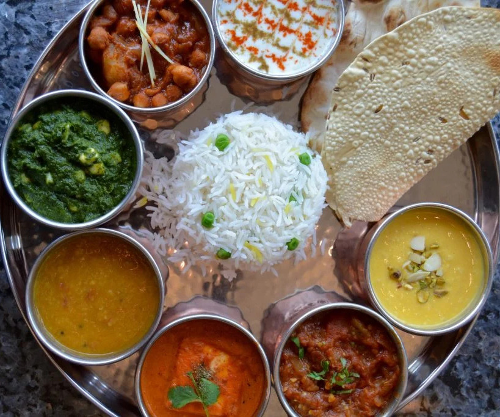
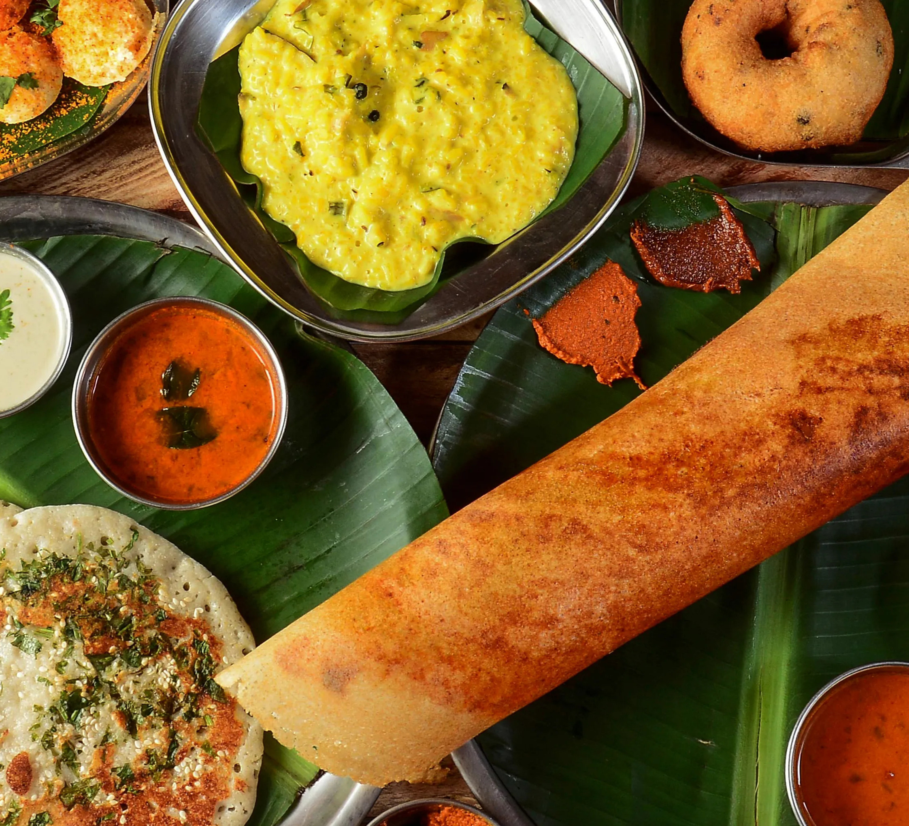
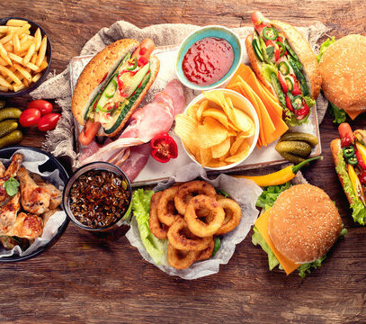
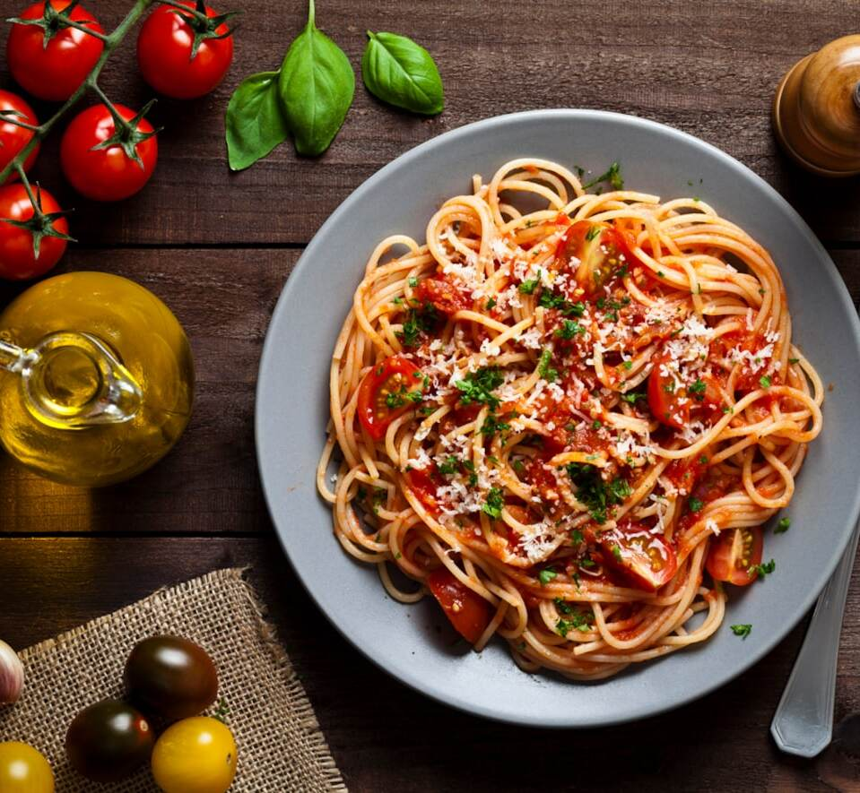
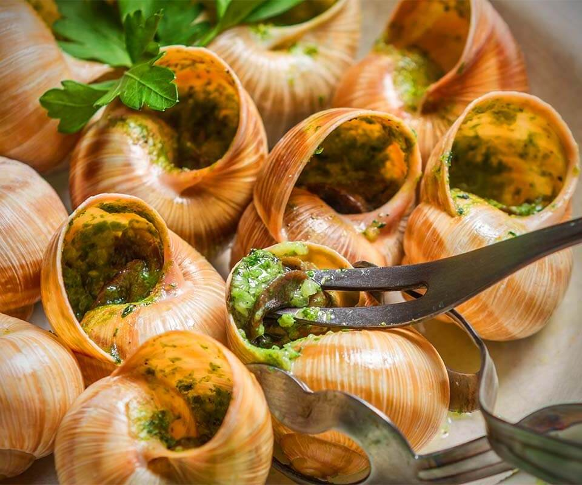
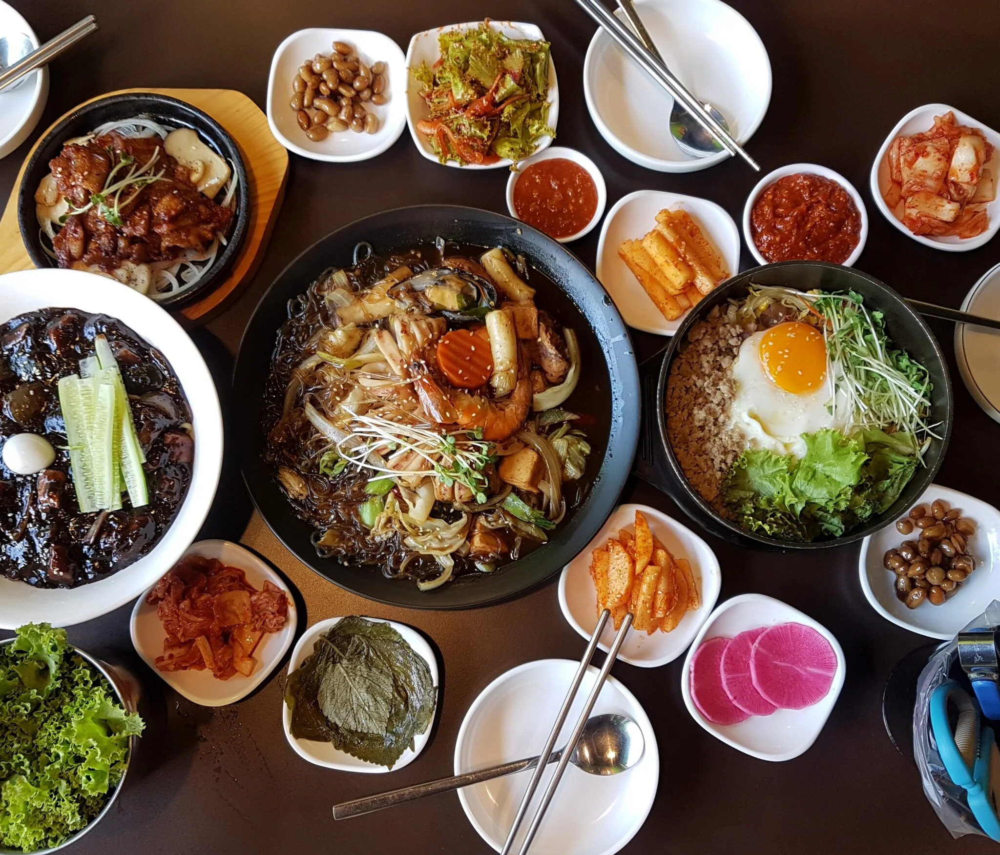

Our Food
|  |
North Indian Cuisine
North Indian cuisine includes the cuisines from the states of Punjab, Haryana, Rajasthan, Kashmir, Himachal Pradesh, Uttaranchal, Uttar Pradesh, Bihar, Jharkhand, Chattisgarh and Madhya Pradesh.
North Indian Cuisine is known as the king of cuisines in India. North Indians and their delicacies are undividable.
North Indians are known as serious food lovers and cooking for this clan is no less than a ritual when compared to other parts of the country.
The taste and flavours of the North Indian Dishes is influenced by the Mughal dynasty that ruled India for three centuries. Apart from the architecture, saffron and rich gravies made of pureed nuts and cream are all in the recipes inherited from them.
|
|  |
South Indian Cuisine
South Indian cuisine is one of the most popular native cuisines of India. It is primarily a combination of the food of the five states of Andhra Pradesh, Karnataka, Telangana, Tamil Nadu and Kerala, and the union territories of Pondicherry, Lakshadweep and Andaman and Nicobar Islands. The cuisines all use spices unique to the region and the cuisines majorly differ in the level of spiciness. South Indian food is known for the use of generous coconut in their curries. Other basic and common ingredients include curry leaves, mustard oil, red chillies and oil etc. Here we have tried to demystify and explain the different cuisines of South India.
|
|  |
American Cuisine
American cuisine is known for its bold and hearty flavors, which are created through the use of a range of spices and herbs. Some of the most commonly used spices in American cuisine include chili powder, cumin, and paprika. These spices are used to create complex and layered flavors that are both savory and spicy.Another key element of American cuisine is the use of fresh and vibrant ingredients such as tomatoes, onions, and garlic. These ingredients are used to create salsas and other sauces that are the backbone of many American dishes.
American cuisine is also known for its use of barbecue, which involves slow-cooking meat over an open flame.
|
|  |
Italian Cuisine
Italian cuisine is a Mediterranean cuisine consisting of the ingredients, recipes and cooking techniques developed in Italy since Roman times and later spread around the world together with waves of Italian diaspora. Some of these foods were imported from other cultures. Significant changes occurred with the colonization of the Americas and the introduction of potatoes, tomatoes, capsicums, maize and sugar beet—the latter introduced in quantity in the 18th century. It is one of the best-known and most appreciated gastronomies worldwide.
Italian cuisine includes deeply rooted traditions common to the whole country, as well as all the regional gastronomies, different from each other, especially between the north, the centre and the south of Italy, which are in continuous exchange.
|
|  |
Mexican Cuisine
Today Mexican Cuisine is a nice blend of the indigenous and Spanish cuisine. It is still based in beans, corn, tortillas, and chile peppers, but these are now usually served with some sort of meat and cheese. Most dishes come with some sort of rice and spices as well, a clear nod to the European influence. Since the colonization many cuisines have influenced Mexican Food, including French. The French intervened in Mexico in the 19th century, and their food was enjoyed by the upper class even after they left.
Obviously there is much more to Mexican food history, but this has been a brief overview.
If you want to see all of these influences in action today, come to Mexicali. All of our food exudes the Mexican and Indigenous culture the cuisine was based on, with modern twists to take it to the next level.
|
|  |
Korean Cuisine
In Korean traditional noodle dishes are onmyeon or guksu jangguk (noodles with a hot clear broth), naengmyeon (cold buckwheat noodles), bibim guksu (cold noodle dish mixed with vegetables), kalguksu (knife-cut noodles), kongguksu (noodles with a cold soybean broth), japchae (cellophane noodles made from sweet potato with various vegetables) and others. In royal court, baekmyeon (literally "white noodles") consisting of buckwheat noodles and pheasant broth, was regarded as the top quality noodle dish. Naengmyeon with a cold soup mixed with dongchimi (watery radish kimchi) and beef brisket broth was eaten in court during summer
Korean food came from very old traditions in Korea. It has developed through many environmental, political, and cultural changes. There are special rules for eating meals in Korea.
|
Locations
 Sayaji Hotel, Indore
Sayaji Hotel, Indore +91-1234567890
+91-1234567890